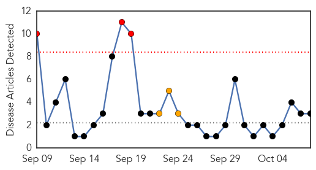
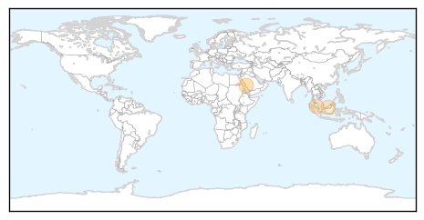
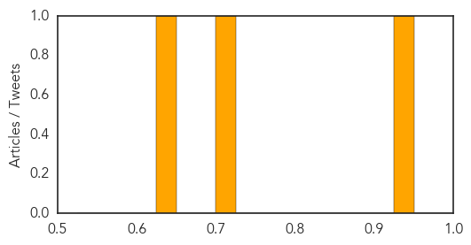
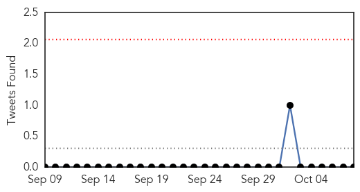

Meningitis
30-Day Web Trend
3 alerts, 3 warnings

30-Day Twitter Trend
0 alerts, 0 warnings

Article Locations
Article Confidences
Top Articles:
Top Tweets:
-
No tweets found for Oct 08, 2014
Cholera
30-Day Web Trend
0 alerts, 0 warnings
30-Day Twitter Trend
0 alerts, 0 warnings

Article Locations
Article Confidences

Top Articles:
- 0.999
- Step by step towards a Haiti free from cholera
- 0.994
- Not all hand sanitizers could prevent Ebola Viral Disease-Researcher
- 0.860
- Haiti: Students Need Safe Water, Toilets - Haiti
- 0.844
- Haiti: Students Need Safe Water, Toilets
- 0.797
- Letter to Vice President Jorge Familiar on the Haiti Water and Sanitation Conference
- 0.704
- Asante-Akim South acts to prevent cholera
Top Tweets:
-
No tweets found for Oct 08, 2014